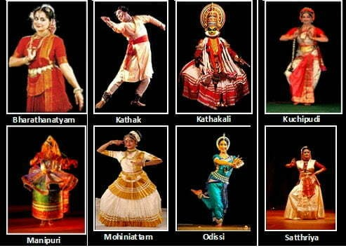

Dance in India comprises numerous styles of
dances. As with other aspects of Indian culture,
different forms of dances originate in different
parts of India, developed according to the local
traditions. Dances in India can be classified as:
Some famous classical dancers in India
| Dancer | Dance | State |
|---|---|---|
| Malika Sarabhai | Kuchipudi | Gujarat |
| Pandit Birju Maharaj | Kathak | Uttar Pradesh |
| Rukmini Devi Arundale | Bharatnatyam | Tamilnadu |
| Shovana Narayan | Kathak | West Bengal |
For further details Contact us